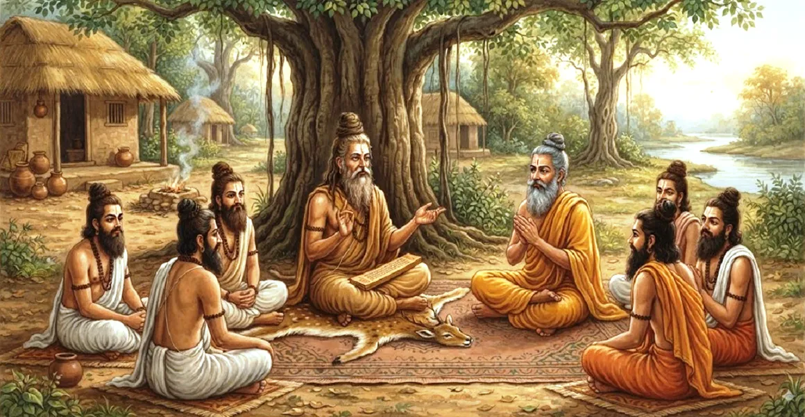

व्यास, शौनक तथा अन्य लोगों की चर्चा
कैलाश संहिता का पहला अध्याय शिव और प्रणव के अंतिम सत्य के संबंध में ऋषि शौनक, पवित्र तपस्वियों, सूत और श्रद्धेय ऋषि व्यास के बीच गहन संवाद से शुरू होता है।
उमा संहिता के पाठ के बाद, साधु शैव धर्म और संन्यास के गूढ़ सिद्धांतों की गहन अनुभूति के लिए काशी में एकत्र होते हैं।
यह अध्याय संपूर्ण कैलाश संहिता के लिए दार्शनिक आधार तैयार करता है, जो ओमकारा और दिव्य ज्ञान के शाश्वत महत्व पर प्रकाश डालता है।
अध्याय 1 की मुख्य बातें
प्रणव का सार
ऋषि प्रणव (ओम) को शिव के प्रत्यक्ष ध्वनि प्रतिनिधित्व के रूप में समझना चाहते हैं।
काशी की तीर्थयात्रा
तपस्वी काशी की यात्रा करते हैं, मणिकर्णिका घाट पर अनुष्ठान करते हैं और विश्वेश्वर में पूजा करते हैं।
सुता का आगमन
सर्वोच्च पौराणिक रहस्यों को उजागर करने के लिए सूता को मुक्ति-मंडप में श्रद्धापूर्वक बैठाया गया है।
व्यास का स्मरण
सुता ने नैमिषा वन में पिछली सभा को याद किया जहां ऋषि व्यास ने दिव्य सत्य प्रकट किया था।
आंतरिक ध्यान
पवित्र शिक्षा शुरू करने से पहले व्यास अपने हृदय में भगवान शिव का ध्यान करते हैं।
मुक्ति का मार्ग
संसार सागर को पार करने की इच्छा रखने वाले साधकों के लिए आध्यात्मिक रूपरेखा तैयार करता है।
इस अध्याय में मुख्य विषय
उमा संहिता से कैलास संहिता में परिवर्तन
उमा संहिता के अमृत को आत्मसात करने के बाद, शौनक और अन्य पहाड़ी तपस्वियों को शैव दर्शन के सूक्ष्मतम आयामों का पता लगाने की गहरी इच्छा महसूस हुई।
उन्होंने माना कि कहानी सुनने की परिणति प्रत्यक्ष दार्शनिक ज्ञान और महादेव की पूर्ण आध्यात्मिक अनुभूति में होनी चाहिए।
ऋषियों की काशी यात्रा
हिमालय की चोटियों को छोड़कर, ऋषियों ने मुक्ति और आध्यात्मिक प्रकाश के निवास, पवित्र शहर काशी की यात्रा की।
उन्होंने मणिकर्णिका घाट पर खुद को शुद्ध किया, पितरों के लिए तर्पण किया और शतरुद्रिय मंत्रों का उपयोग करके भगवान विश्वेश्वर की भक्तिपूर्वक प्रार्थना की।
सुता का आगमन एवं स्वागत
जब ऋषि भक्ति में एकत्र हुए थे, सूत-ऋषि व्यास के सबसे प्रमुख शिष्य-पवित्र तीर्थ स्थल पर पहुंचे।
ऋषियों ने गहरे सम्मान के साथ उनका स्वागत किया, उन्हें मुक्ति-मंडप में बैठाया, और पुराणों पर उनकी दिव्य बुद्धि और निपुणता की प्रशंसा की।
प्रणव तथा शिवतत्त्व के विषय में ऋषियों का प्रश्न
शौनक और ऋषियों ने प्रणव (ओम) के वास्तविक गूढ़ अर्थ और संन्यास के मार्ग को समझने की गहरी इच्छा व्यक्त की।
उन्होंने सुता से अपील की कि वे उन्हें सांसारिक भ्रम और अज्ञान के अशांत सागर से पार ले जाने के लिए एक आध्यात्मिक जहाज के रूप में कार्य करें।
सुता ने ऋषि व्यास के साथ सभा का वर्णन किया
पूछताछ का जवाब देते हुए, सुता ने पवित्र नैमिषा वन में स्वारोचिष मन्वंतर के दौरान एक पवित्र सभा को याद किया।
एक लंबे यज्ञ के दौरान, ऋषि व्यास - शिव द्वारा आशीर्वादित नारायण के अवतार - अपने आध्यात्मिक संदेहों को हल करने के लिए प्रदर्शन करने वाले ऋषियों के सामने उपस्थित हुए।
ऋषि व्यास का भगवान शिव पर ध्यान
ऋषियों की सच्ची उत्सुकता से प्रेरित होकर, ऋषि व्यास ने अपने हृदय कमल के भीतर प्रणव के अवतार भगवान शिव का ध्यान किया।
दिव्य आनंद से भरकर, व्यास परम सत्य और त्याग का सार प्रकट करते हुए, पवित्र कैलाश संहिता प्रदान करने के लिए सहमत हुए।
अध्याय 2 की ओर
पवित्र प्रस्तावना और संदर्भ स्थापित करने के बाद, संवाद निर्बाध रूप से अध्याय 2 में बदल जाता है, जहां प्रणव का विस्तृत विवरण शुरू होता है।
साधकों को शैव दर्शन और तपस्वी आचरण के उत्कृष्ट आध्यात्मिक रहस्यों में आगे निर्देशित किया जाता है।
अध्याय 1 की मुख्य शिक्षाएँ
सत्य के रूप में प्रणव
ओमकारा स्वयं भगवान शिव का प्रत्यक्ष ध्वनिक प्रतीक और सार है।
काशी की पवित्रता
काशी आध्यात्मिक जांच और मुक्ति के लिए आदर्श क्षेत्र के रूप में कार्य करता है।
उपदेशक की भूमिका
व्यास या सुता जैसे बुद्धिमान गुरु पौराणिक रहस्यों को सुलझाने के लिए महत्वपूर्ण हैं।
आंतरिक पवित्रता
सत्य के प्रति सच्ची चाहत साधक की चेतना को शुद्ध कर देती है।
ध्यान की शक्ति
हृदय में शिव का ध्यान करने से दिव्य ज्ञान प्राप्त होता है।
तपस्वी फाउंडेशन
सच्चे त्याग (संन्यास) को समझने के लिए आधार तैयार करता है।
आध्यात्मिक चिंतन
व्यास, शौनक और सूत के बीच चर्चा हमें याद दिलाती है कि आध्यात्मिक विकास विनम्र पूछताछ और गहन भक्ति से शुरू होता है। प्रणव का ध्यान करके और श्रद्धा के साथ पवित्र ज्ञान के पास जाकर, एक साधक भगवान शिव की सर्वोच्च कृपा प्राप्त करने और स्थायी मुक्ति प्राप्त करने के लिए मन को तैयार करता है।
अध्याय 1 का संदेश जीना
मन को शांत करने और सर्वोच्च ऊर्जा से जुड़ने के लिए प्रणव (ओम) के जाप को अपनी दिनचर्या में शामिल करें।
प्रबुद्ध गुरुओं से आध्यात्मिक ज्ञान प्राप्त करें और पवित्र ग्रंथों को विनम्रता और भक्ति के साथ ग्रहण करें।
संयम के साथ सांसारिक कष्टों से निपटने के लिए अपने हृदय में भगवान शिव का आंतरिक ध्यान का अभ्यास करें।
प्रमुख आध्यात्मिक अवधारणाएँ
शिव की प्रत्यक्ष वास्तविकता का प्रतिनिधित्व करने वाली मौलिक पवित्र ध्वनि।
मुक्ति की पवित्र नगरी जहां भगवान विश्वेश्वर सदैव निवास करते हैं।
आध्यात्मिक अनुशासन और पूर्ण त्याग का मार्ग।
शिव की हजारों अभिव्यक्तियों की स्तुति में रचित वैदिक स्तोत्र।
काशी में उच्च आध्यात्मिक चर्चा हेतु समर्पित पवित्र मंडप।
ओम में सन्निहित सर्वोच्च सत्ता का ब्रह्मांडीय ध्वनि पहलू।
अध्याय सारांश
कैलाश संहिता अध्याय 1 में उमा संहिता के बाद ऋषि शौनक और अन्य तपस्वियों की काशी की तीर्थयात्रा का विवरण दिया गया है। मुक्ति-मंडप में सुता से मिलने पर, उन्होंने प्रणव और संन्यास के बारे में जानने की तीव्र इच्छा व्यक्त की। सुता ने नैमिषा वन में एक पुरानी घटना को याद किया जहां ऋषि व्यास ने शिव का ध्यान किया और कैलास संहिता को प्रकट करने के लिए सहमति व्यक्त की, जिससे अध्याय 2 की गहरी गूढ़ शिक्षाओं के लिए मंच तैयार हुआ।
अक्सर पूछे जाने वाले प्रश्न
1. कैलास संहिता अध्याय 1 का मुख्य विषय क्या है?
अध्याय 1 कैलास संहिता के परिचय के रूप में कार्य करता है, जिसमें पवित्र संतों की काशी की तीर्थयात्रा, प्रणव (ओम) के बारे में उनकी पूछताछ और ऋषि व्यास की गहन शिक्षाओं के बारे में सुता का विवरण शामिल है।
2. काशी में ऋषियों का जमावड़ा क्यों हुआ?
उमा संहिता को सुनने के बाद, ऋषियों ने मणिकर्णिका घाट पर स्नान करने, भगवान विश्वेश्वर की पूजा करने और शैव दर्शन की गहरी अनुभूति की तलाश के लिए काशी की यात्रा की।
3. ऋषियों ने सूत जी से क्या मुख्य प्रश्न पूछा?
ऋषियों ने सुता से प्रणव (ओम) के गूढ़ महत्व और परम मुक्ति और भगवान शिव के साथ घनिष्ठ मिलन का मार्ग बताने का अनुरोध किया।
4. इस अध्याय में ऋषि व्यास की भूमिका कौन है?
ऋषि व्यास को महादेव की कृपा के भंडार के रूप में चित्रित किया गया है, जो कैलास संहिता को प्रकट करने के लिए प्रणव के अवतार के रूप में शिव का ध्यान करते हैं।
5. अध्याय 1 कैलास संहिता के शेष भाग से कैसे जुड़ता है?
अध्याय 1 बाद के अध्यायों के लिए दार्शनिक रूपरेखा और आध्यात्मिक आवश्यकता स्थापित करता है, जिसमें संन्यास अनुशासन, प्रणव पूजा और शैव तत्व का विवरण है।
6. इस अध्याय का मुख्य आध्यात्मिक निष्कर्ष क्या है?
भक्ति और विनम्रता के साथ प्रणव के सर्वोच्च सत्य की जांच करने से परम ज्ञान और दिव्य मुक्ति का द्वार खुल जाता है।
"प्रणव शिव का अविनाशी ध्वनिक रूप है; पूर्ण भक्ति के साथ इसके रहस्य की जांच करने से कैलास के सर्वोच्च क्षेत्र का पता चलता है।"
कैलाश संहिता के माध्यम से जारी रखें
अध्याय 1 व्यास, शौनक और अन्य लोगों के बीच हुई चर्चा का अन्वेषण करता है। अध्याय 2, ओंकार का अर्थ जारी रखें।